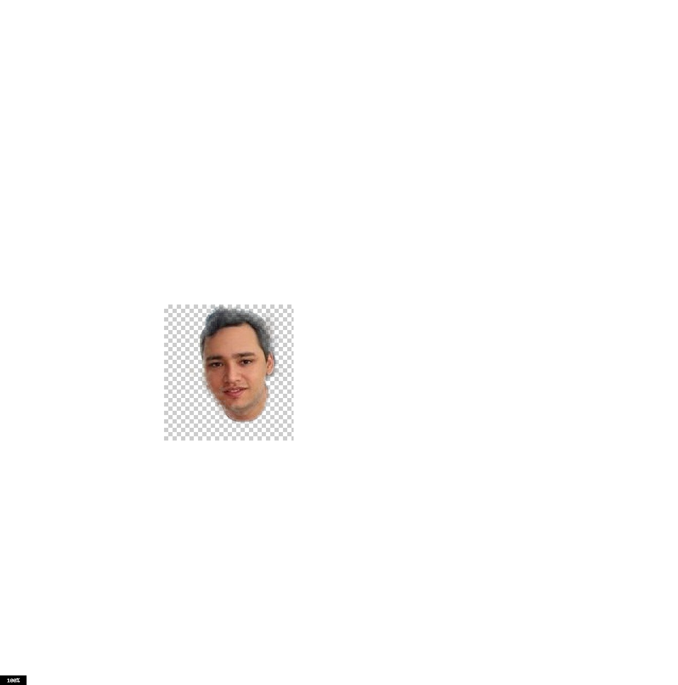

Hej! Jag heter Francisco Mauricio De Leon

Jag är student med intresse för Webbutveckling. På den här sidan delar jag en sammanhållen bildserie där jag arbetat med ljusbalans, färgprofiler, beskärning, borttag av objekt och selektiv färgläggning.